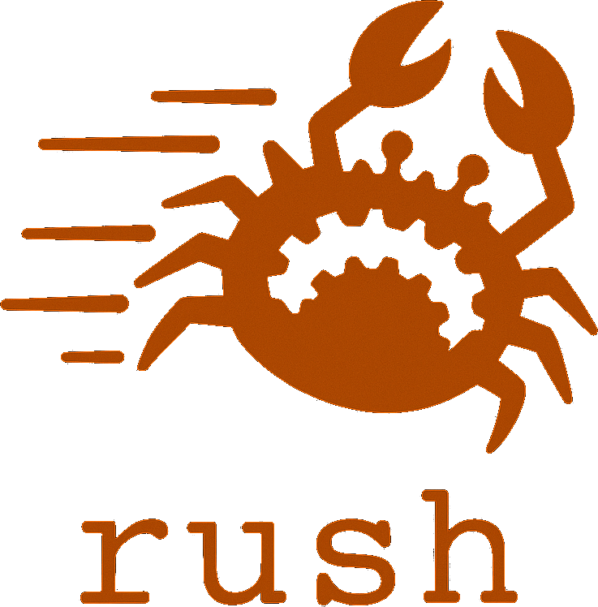

Keep useful work.
Retain analysis state and validate its inputs before reusing a build graph.
Rust · incremental builds · experimental source release
Build Bazel-style workspaces with Rust. Reuse analysis and outputs, then compare the result with the same targets and toolchains under Bazel.
Build from source →Early development. Check your rules, toolchain and configuration against your reference build.

Experimental release · measured workloads
Choose the workload and operation. Keep unchanged commands, novel edits and cache restoration separate; each measures different work.
Measure unchanged //tensorflow/core:framework commands over an 18,522-dependency manifest. Use the median of 30 samples.
| Operation | Rush | Bazel | Bazel --watchfs |
|---|---|---|---|
| Warm no-op command | 9.3 ms | 64.2 ms | 54.5 ms |
Read this as command latency for one target. Check the scope and reproduction inputs. Use the separate 463-test CPU runtime gate to evaluate test behavior.
Build the same 4,175-target ledger at Modular pin cc7155d. Report three-run medians for these modes.
| Operation | Rush | Bazel | Cache/input state |
|---|---|---|---|
| Restore deleted outputs | 32 s | 63 s | Populated disk caches |
| Leave inputs unchanged | 0.05 s | 12.6 s | Warm no-op |
| Compile a novel one-file edit | 26.0 s | 30.1 s | Distinct edit bytes per run |
| Repeat an already-cached edit | 0.15 s | ~13 s | Reuse a known input state |
Read the full tables and plots. Revalidate cache clearing before treating the single-sample 362 s / 611 s compile result as an uncached speed ratio.
Use the same Linux tree carrying Lorenzo Stoakes's v1 build-speedup patches. Compare populated-cache Rush replay into a clean output root with clean Make compilation.
| Rush replay median | GNU Make median | Samples and output checks |
|---|---|---|
| 40.24 s | 50.92 s | Three alternating pairs; 12,397 persistent entries matched |
Read the ratio as 1.27x, or about 21% less wall time, within this three-pair experiment. Account for capture and graph preparation separately; the empty-cache Rush diagnostic takes 12:02.92.
Parts of Lorenzo's work have merged into mainline. Keep the measured v1-patched baseline fixed. Check patch status, setup costs and the remaining acceptance gate.
Read workload acceptance scopes · Inspect measurement provenance
Compare Rush with Buck2 → Read the architecture, local timings and remote backend checks. Execute declared actions on remote workers.
Retain analysis state and validate its inputs before reusing a build graph.
Schedule actions through shared execution and resource-admission machinery.
Use action identities and content-addressed storage to avoid repeating work.
Try a small workspace
Use Cargo and your native C/C++ toolchain. The README describes prerequisites and a small example. Linux capture features require Linux.
cargo build --release --locked --bin rush -j8 ./target/release/rush --help cd examples/hello_cpp ../../target/release/rush build //:hello
Maintenance by design
Component specialists help investigate and repair bounded tasks. A coordinator tracks work and evidence; human maintainers control the project's decisions.
Read the maintenance design →Rush adopts the Chores maintenance process: reproduce, repair, test, review and complete the delegated work.
The source includes component routing and a pinned policy starter. Scheduled workers, account budgets and automated GitHub writes still need qualification.